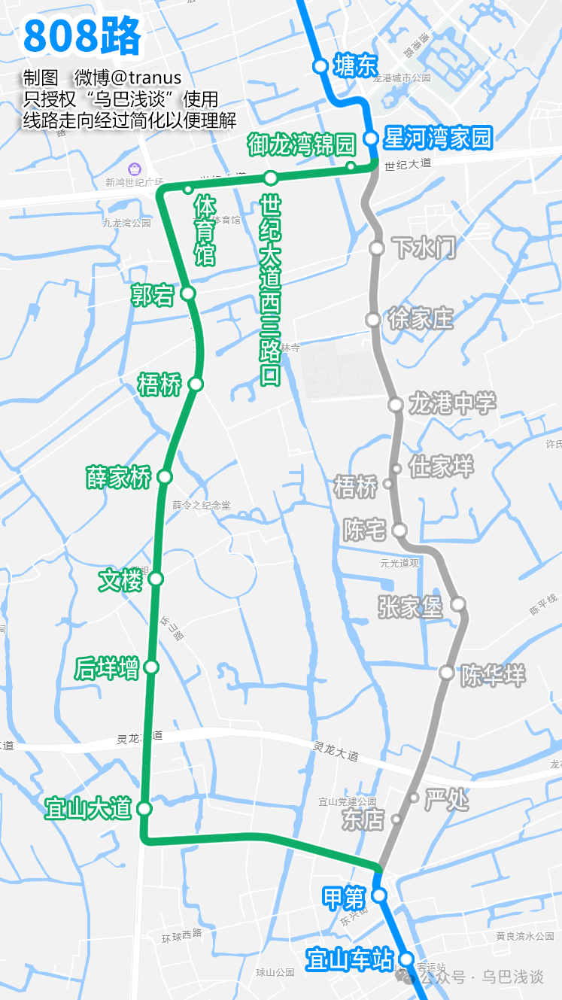
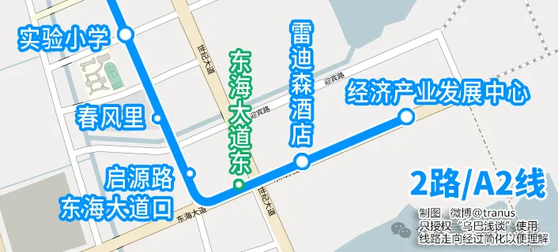
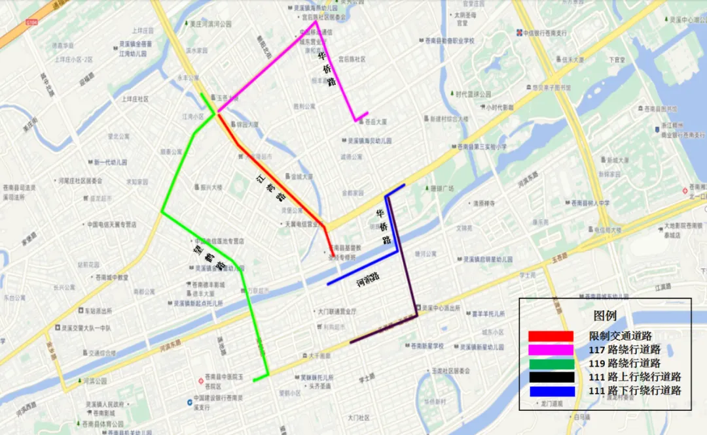
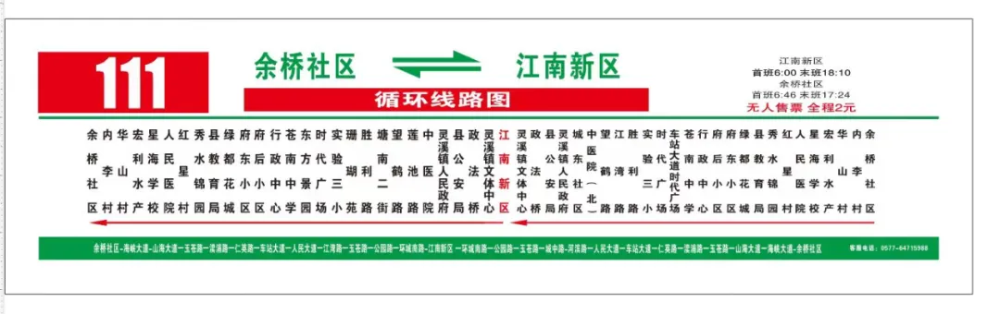

一、龙港公交
-
2路临时调整
施工路段：沿江路
取消站点：礼品城、禁毒协会、江南实验学校、沿江路西三路口、沿江路西一路口、沿江路人民路口、沿江路建新路口、中西医结合医院
新增站点：锦港嘉园（往经济产业发展中心）、融媒体中心、、第三中学、龙港书城、银苑大厦、百有市场北、第一中学
-
A1路临时调整
施工路段：西城路1号桥（西城路513号至西城路529号路段）
取消站点：西排农贸市场（招呼站）、万宝路大酒店（招呼站）、示范工业园（招呼站）
新增站点：西三路西城路口（往江滨公园）、西排社区
-
6路、17路、807路临时调整
取消站点：下水门、徐家庄、龙港中学

-
9路、K005路临时调整
取消站点：老台、炉头、环港、浃底、方城浦、友谊社区、潘处、舥艚（山塘文化礼堂）
新增站点：老台临时下客点（往新城华府）、新城华府
-
808路临时调整
取消站点：下水门、徐家庄、龙港中学、梧桥（往炎亭；埭金线站点）、仕家垟（往龙港客运中心）、陈宅、张家堡、陈华垟、东店（往炎亭）、严处（往龙港客运中心）
新增站点：御龙湾锦园（往炎亭）、世纪大道西三路口、体育馆（往龙港客运中心）、郭宕、梧桥（龙金大道站点）、薛家桥、文楼、后垟增、宜山大道

-
2路、A2路调整

-
龙港13、806停运，11、16末站互换，A5、A6始发站改至龙港客运中心
详见此链接
{kind=link}
{kind=link}
二、苍南公交
-
111路、117路、119路临时调整
施工路段：灵溪镇江湾路（建兴东路—塘北东路）
施工时间：2026年3月22日至2026年8月22日
一、111路公交线路
上行临时走向：江南新区→环城南路→公园路→玉苍路→华侨路→人民大道→车站大道→仁英路→渎浦路→玉苍路→兴园路→成功路→苍南书城
下行临时走向：苍南书城→成功路→兴园路→玉苍路→渎浦路→仁英路→车站大道→人民大道→华侨路→河滨路→城中路→玉苍路→公园路→环城南路→江南新区
二、117路公交线路
临时走向：秦岙站→建兴西路→建兴东路→华侨路→仁英路→上江路→站南路→通福路→联进村（往返一致）
三、119路公交线路
临时走向：苍南县社会福利中心→一小路→环城南路→公园路→玉苍路→望鹤路→建兴东路→江湾路→迎福路→车站大道→站南路→沪山新溪村（往返一致）

111、117、119路改线示意图 -
111路调整
调整路线，由苍南书城调整至余桥社区始发
取消车站：台商小镇、苍南书城
新增车站：星海学校、宏利水产、华山村、内李村、余桥社区

111路站牌
{kind=link}
{kind=link}